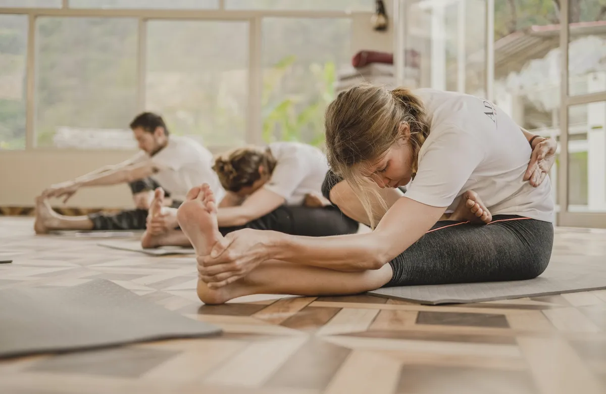
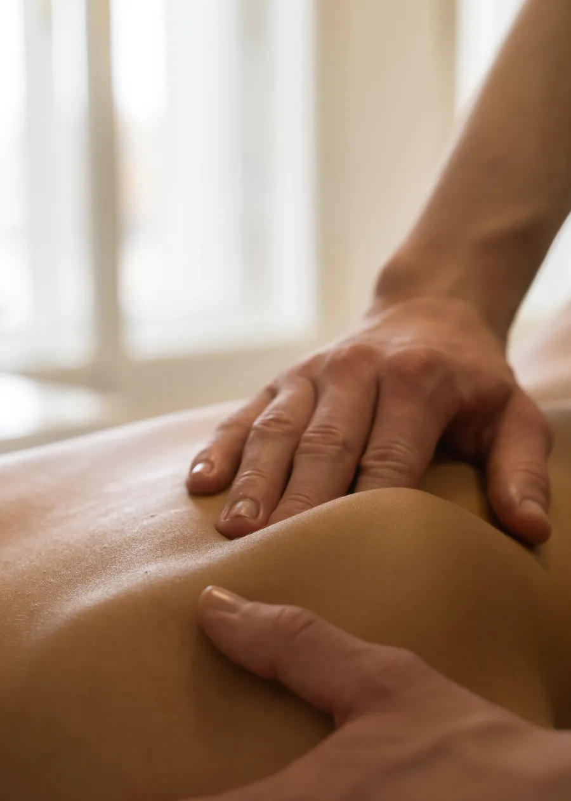
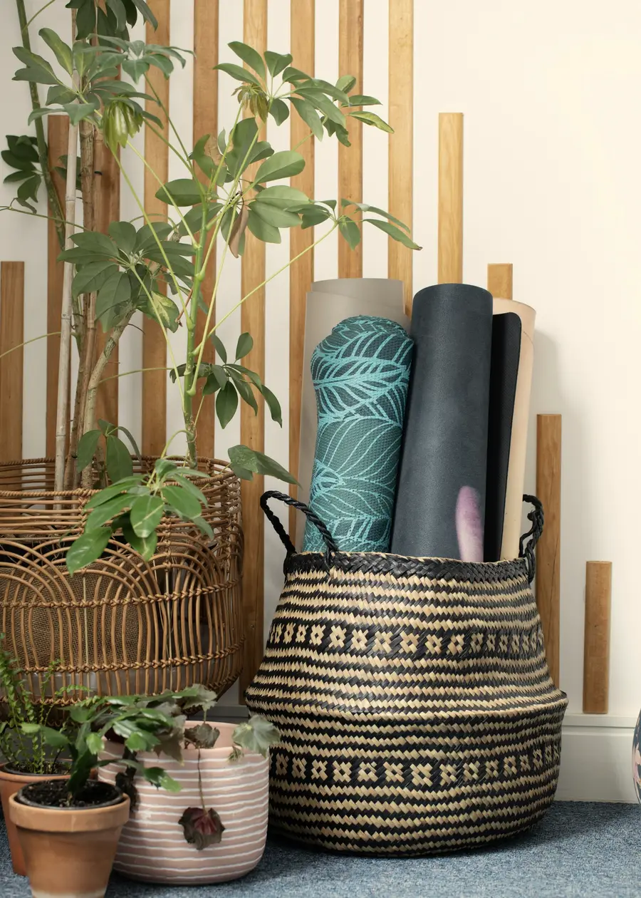

Mal. Rondon, Canoas
Marcela Daniel Fisioterapia e Pilates
Pilates em grupo, fisioterapia e fisioterapia pélvica para mulheres, com cada exercício adaptado ao seu corpo.
Agendar pelo WhatsApp
Nota 5,0 no Google
Quem treina com a Marcela recomenda
“O Pilates me ajudou muito a aliviar as dores nas costas e no ombro, e percebo o cuidado e a dedicação dela em cada exercício, sempre trazendo variedade e adaptando tudo às necessidades de cada aluno.”
Marisa O.
“Conheci a fisioterapia pélvica sem saber exatamente o quanto ela poderia me ajudar. Desde o primeiro atendimento fui acolhida com muito profissionalismo, carinho e atenção.”
Cris O.
“Sinto uma diferença enorme na minha postura, flexibilidade e nas dores nas costas desde que comecei.”
Marlene H.
“Precisei para tratamento da lombar, conciliando sessões de fisioterapia e pilates, com trabalho dinâmico e eficaz.”
Renato C.
“A Profe Marcela demonstra pleno conhecimento de seu trabalho com diferentes tipos de corpos, idades, dores e necessidades das alunas.”
Riete P.
“Graças ao Pilates melhorei muito minha condição física e ainda fiz amizades e me sinto muito bem com o grupo.”
Elisangela S.
Atendimentos
Pilates e fisioterapia, no mesmo lugar
Dá para fazer as aulas, as sessões de fisioterapia ou as duas coisas juntas, conforme o que o seu corpo pede.

-
Pilates em grupo
Aulas em turma, com exercícios variados e ajustados à necessidade de cada aluno.
-
Fisioterapia
Tratamento para dor lombar, nas costas e no ombro, que pode andar junto com o Pilates.
-
Fisioterapia pélvica
Saúde da mulher, inclusive depois dos 50, para conhecer e cuidar do próprio corpo.
-
Fisio pélvica na gravidez
Acompanhamento durante a gestação, para aliviar as dores dessa fase.
-
Massagem
Sessões de massagem para soltar a tensão das costas e dos ombros.
Saúde da mulher
Fisioterapia pélvica, do jeito que as pacientes contam
“Fiz Pilates e também fisio pélvica, onde aprendi a conhecer meu corpo e além disso que a pélvis precisa de cuidados e sua importância na nossa sustentação corporal após os 50 anos.”
Rita G.
“Fiz fisio pélvica na gravidez com a Marcela, excelente profissional, ambiente acolhedor.”
Shaiane M.
Quem atende
Com a Marcela, no seu ritmo
Fisioterapeuta e professora de Pilates, a Marcela é citada pelo nome em muitas avaliações. Algumas das palavras que os alunos usam:
- acolhedora
- atenciosa e paciente
- dedicada
- conhecimento técnico
- transmite muita segurança
- boa energia
- 1
Mande uma mensagem
O atendimento é com hora marcada. Conte pelo WhatsApp o que você sente ou o que procura.
- 2
Escolha o horário
De segunda a sexta, das 7h às 21h, e no sábado pela manhã.
- 3
Aulas e sessões sob medida
Exercícios adaptados ao seu corpo, à sua idade e às suas dores, com acompanhamento de perto.

Estúdio e agenda
Av. Inconfidência, 777, no Marechal Rondon
- Segunda a sexta
- 7h às 21h
- Sábado
- 9h às 12h
- Domingo
- Fechado
- Entrada, banheiro e estacionamento acessíveis
- Sala de amamentação
- Acolhe a comunidade LGBTQ+
- Espaço seguro para pessoas trans
Recado de quem fez esta página
Para Marcela Daniel
Sou o Conrado Lemos, desenvolvedor aqui de Canoas. Montei esta página para mostrar como ficaria o seu site. Tudo acima é o que a aluna ou o paciente veria.
- A nota, as avaliações, o endereço, os horários e os atendimentos vieram do seu perfil no Google.
- Todas as fotos são ilustrativas, de banco de imagens. Na versão final entram fotos profissionais suas e do seu estúdio.
- Textos, atendimentos e avaliações em destaque são revisados e escolhidos por você.
R$ 1.000, com o site no ar em até 3 dias, no seu próprio domínio. O pagamento é só na entrega, depois da sua aprovação. O domínio é à parte, cerca de R$ 40 a R$ 55 por ano.
Gostou? É só responder a minha mensagem no WhatsApp.